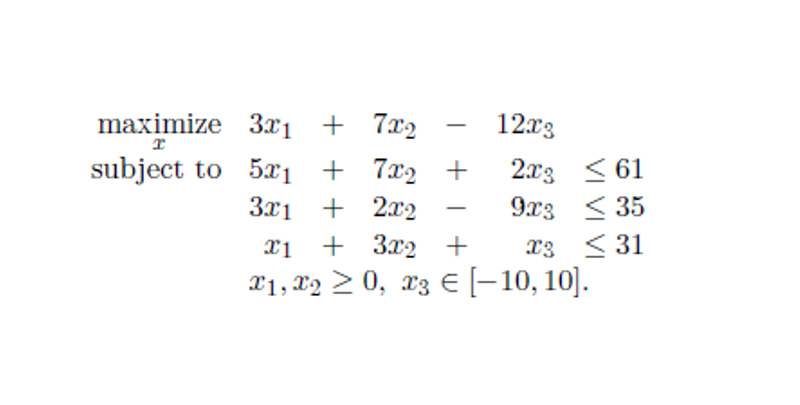

El paquete ROI (= R Optimization Infrastructure) nos proporciona una infraestructura ampliable para modelado de problemas de optimización (lineal, cuadrática, cónica y no lineal en generalgeneral). Además, administra múltiples solvers, reformulaciones, colecciones de problemas y funciones para leer y escribir problemas de optimización en varios formatos.
El paper de 2019 es muy recomendable para iniciarse en ROI y para profundizar luego en él. En su Apartado 2 encontrarás un resumen de teoría de optimización, en el 3 tienes una interesante panorámica del software de optimización disponible en R, en los 4 y 5 dispones de la descripción de la infraestructura y la librería. El paper termina con un apartado 6 dedicado a ejemplos.
En definitiva, la principal ventaja de ROI es que es a la optimización lo que caret fue a machine learning: un wrapper que unifica la interfaz de programación independientemente del solver.
Te muestro a continuación un pequeño ejemplo de su uso.
Vamos a utilizarlo con este sencillo problema de optimización lineal:

Lo primero que hacemos es definir el problema como un objeto OP
(Optimization Problem):
library(ROI)
library(tidyverse)
A <- rbind(c(5, 7, 2), c(3, 2, -9), c(1, 3, 1))
dir <- c("<=", "<=", "<=")
rhs <- c(61, 35, 31)
lp <- OP(objective = L_objective(c(3, 7, -12)),
constraints = L_constraint(A, dir = dir, rhs = rhs),
types = NULL, # NULL ="C", "I", "B"
bounds = V_bound(li = 3, ui = 3, lb = -10, ub = 10, nobj = 3),
maximum = TRUE)Alternativamente lo podríamos definir así:
# ALTERNATIVA:
lp <- OP()
objective(lp) <- L_objective(c(3, 7, -12)) # 3x_1 + 7x_2 -12x_3
constraints(lp) <- L_constraint(A, dir = c("<=", "<=", "<="), rhs = rhs)
bounds(lp) <- V_bound(li = 3, ui = 3, lb = -10, ub = 10, nobj = 3)
# types(lp)
maximum(lp) <- TRUEEste es el problema que hemos definido:
lp## ROI Optimization Problem:
##
## Maximize a linear objective function of length 3 with
## - 3 continuous objective variables,
##
## subject to
## - 3 constraints of type linear.
## - 1 lower and 1 upper non-standard variable bound.Como ves, ROI identifica el tipo de problema que le hemos definido. Esto facilita que, a continuación, busquemos un solver apropiado para este problema.
La infraestructura ROI tiene disponibles los siguientes solvers:
ROI_available_solvers(lp)[, c("Package", "Repository")] %>% head()## Package Repository
## 1 ROI.plugin.alabama https://CRAN.R-project.org
## 2 ROI.plugin.clp https://CRAN.R-project.org
## 3 ROI.plugin.cplex https://CRAN.R-project.org
## 5 ROI.plugin.ecos https://CRAN.R-project.org
## 6 ROI.plugin.glpk https://CRAN.R-project.org
## 7 ROI.plugin.lpsolve https://CRAN.R-project.org(se muestran solo 6, pero hay bastantes más).
¿Cuáles tenemos instalados en nuestro entorno?
ROI_installed_solvers()## nlminb alabama deoptim
## "ROI.plugin.nlminb" "ROI.plugin.alabama" "ROI.plugin.deoptim"
## glpk lpsolve nloptr
## "ROI.plugin.glpk" "ROI.plugin.lpsolve" "ROI.plugin.nloptr"
## quadprog
## "ROI.plugin.quadprog"Si el que necesitas no está instalado:
install.packages("ROI.plugin.glpk")De los que tenemos instalados, ¿cuáles están ya registrados (porque ya los hemos utilizado anteriormente) ?
ROI_registered_solvers() %>% head(15)## nlminb alabama deoptimr
## "ROI.plugin.nlminb" "ROI.plugin.alabama" "ROI.plugin.deoptim"
## deoptim glpk lpsolve
## "ROI.plugin.deoptim" "ROI.plugin.glpk" "ROI.plugin.lpsolve"
## nloptr.bobyqa nloptr.crs2lm nloptr.direct
## "ROI.plugin.nloptr" "ROI.plugin.nloptr" "ROI.plugin.nloptr"
## nloptr.directL nloptr.lbfgs nloptr.neldermead
## "ROI.plugin.nloptr" "ROI.plugin.nloptr" "ROI.plugin.nloptr"
## nloptr.newuoa nloptr.sbplx nloptr.stogo
## "ROI.plugin.nloptr" "ROI.plugin.nloptr" "ROI.plugin.nloptr"Para registrarlo la primera vez que lo usas lo único que hay que hacer es cargar la librería del plugin:
library("ROI.plugin.glpk")Ahora preguntamos a ROI qué solvers son aplicables a este problema:
ROI_applicable_solvers(lp)## [1] "alabama" "glpk" "lpsolve" "nloptr.cobyla"
## [5] "nloptr.mma" "nloptr.auglag" "nloptr.isres" "nloptr.slsqp"Con el solver que elijamos ya podemos resolver el problema:
(lp_sol <- ROI_solve(lp, solver = "glpk"))## Optimal solution found.
## The objective value is: 8.670149e+01Y ver sus los resultados. El óptimo se encuentra en:
solution(lp_sol)## [1] 0.000000 9.238806 -1.835821Y el valor de la función objetivo optimizada:
objective(lp)(solution(lp_sol))## [1] 86.70149También podemos ver el status del solver:
lp_sol$status## $code
## [1] 0
##
## $msg
## solver glpk
## code 5
## symbol GLP_OPT
## message Solution is optimal.
## roi_code 0lp_sol$message## $optimum
## [1] 86.70149
##
## $solution
## [1] 0.000000 9.238806 -1.835821
##
## $status
## [1] 5
##
## $solution_dual
## [1] -4.298507 0.000000 0.000000
##
## $auxiliary
## $auxiliary$primal
## [1] 61.0000 35.0000 25.8806
##
## $auxiliary$dual
## [1] 0.5820896 1.4626866 0.0000000
##
##
## $sensitivity_report
## [1] NAY hasta aquí el ejemplo. Como ves, la dinámica de uso es bastante clara y cómoda. Los problemas de optimización reales no son tan simples como este ejemplo, por supuesto. Pero usar ROI nos permite centrarnos en plantear y solucionar el problema sin malgastar demasiado esfuerzo en la programación de la solución.
Por último, te dejo un par de enlaces que espero te sean útiles:
Y un video que cuenta más o menos lo mismo que este post: